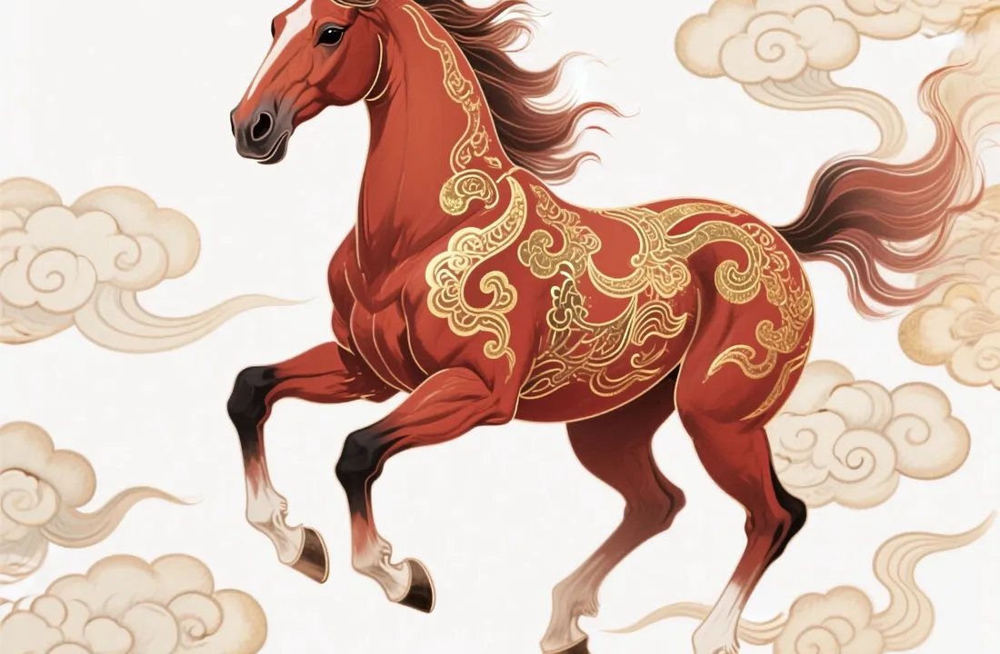

Zodiac Stories & Legends
The Horse in the Zodiac: Freedom and Determination
The Horse was racing toward sixth place when something small and quiet slipped off its hoof. The surprise cost it a place, but not its reputation.

A symbol of speed and vitality
After the mythical dragon, few animals are held in higher regard in Chinese culture than the horse. It stands for speed, endurance, imagination and vitality. An exceptionally capable person is sometimes called a "thousand-li horse", after the swift horses of old said to cover a thousand li (a traditional unit of distance).
A language full of horses
Horses gallop through everyday Chinese speech, and almost always in a good way. The greeting ma dao cheng gong, literally "success when the horse arrives", wishes someone instant success. Yi ma dang xian, "one horse in front", means to take the lead.
There is also the old story of Bo Le, a man famous for spotting fine horses that others overlooked. His name came to stand for anyone who recognises hidden talent, a reminder that the horse's gifts are worth looking for.
The Horse in the Great Race
In the folk tale of the Great Race, the Horse galloped through the river with power and confidence, heading for sixth place. What it did not know was that the Snake had wrapped itself around one of its hooves to hitch a ride. Just before the finish, the Snake uncoiled and darted out in front. The startled Horse reared back, and the Snake took sixth place while the Horse came seventh.
Storytellers rarely blame the Horse. It ran its own race honestly; it simply did not see the passenger it was carrying. Read the Snake's side in The Snake's Place in the Great Race.
A surprising detail from history
The twelve animals were not always exactly the ones we know. Bamboo slips from a Qin tomb at Shuihudi, sealed in 217 BCE, record an animal cycle in which a deer stands where the Horse is now, and a horse stands where the Goat is now. By the time of Wang Chong's Lunheng in the first century CE, the familiar list had settled. More on this in Why Are There 12 Animals?
What this means for the Horse sign
Our Year of the Horse guide describes the sign as energetic, independent and adventurous, loving freedom and new experiences. The race shows the same spirit: the Horse runs fast and straight. Traditional readings add that Horses can be impatient or find long-term commitment hard, and the Snake's surprise is a gentle reminder to look around now and then, not just ahead.
2026: a Horse year
The current Chinese zodiac year is a Horse year: it began at Lunar New Year on 17 February 2026 and runs until 6 February 2027. In Cambodia the Horse is called Momee, and the Khmer animal year changes at Khmer New Year in April; see Khmer animal years.
Born in a Horse year? Find your zodiac animal and element and read the full Horse guide.
Frequently asked questions
What does the horse symbolise in Chinese culture?
Speed, endurance, imagination and vitality. Most horse idioms are positive, such as ma dao cheng gong, wishing instant success.
Why is the Horse seventh in the zodiac?
In the folk tale, the Snake rode on the Horse's hoof and darted ahead at the finish, startling the Horse.
Is 2026 the Year of the Horse?
Yes. The Horse year began on 17 February 2026 and lasts until Lunar New Year on 6 February 2027.
Sources and further reading
- University of Newcastle Confucius Institute: Happy Chinese New Year 2026 — the horse as a symbol of speed, endurance and vitality, and common horse idioms.
- Wikipedia: Chinese zodiac — the Great Race folk tale and its variants, and the link between the animals and the Earthly Branches.
- StudyCLI: Chinese Zodiac Explained — notes that the Shuihudi slips (tomb sealed in 217 BCE) record an animal cycle with a deer where the Horse is now.
- Macao Communications Museum: Chinese Zodiac in Postage Stamps — names Wang Chong's Lunheng as the earliest surviving text with today's twelve signs.
The Great Race and the other tales here are folk tales, told in many versions; they are not historical events. Personality traits are traditional zodiac beliefs, shared for culture and entertainment.
Explore more: The Snake's Place in the Great Race · Year of the Horse guide · The Great Zodiac Race · Why Are There 12 Animals? · All Zodiac Stories & Legends
← Back to Zodiac Stories & Legends